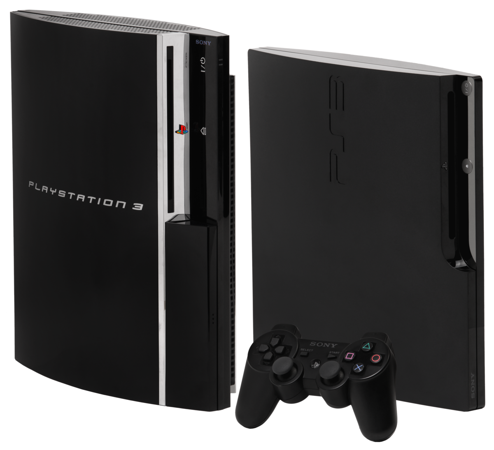
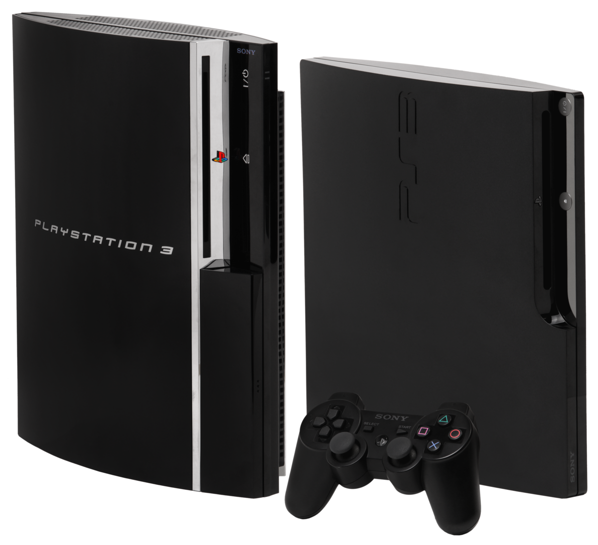

Sony Interactive Entertainment lanzó su primera consola de videojuegos, la PlayStation (PSX), en 1994. Se considera la videoconsola más exitosa de la quinta generación tanto en ventas como en popularidad. En el año 2000, coincidiendo con el lanzamiento de la nueva Playstation 2, Sony decidió alargar la vida de la PSX reduciendo su tamaño y mejorando algunos de sus componentes. Este nuevo modelo, PSOne, estaba destinado a ofrecer alternativa más asequible a la PS2 (que tendría un precio más elevado) y las N64 y Dreamcast de la competencia.
 


PlayStation es una videoconsola de sobremesa de 32 bits lanzada por Sony Computer Entertainment el 3 de diciembre de 1994 en Japón... Más información
La PlayStation 2 es la segunda videoconsola de sobremesa producida por Sony Computer Entertainment y la sucesora de PlayStation... Más información
PlayStation 3 es la tercera videoconsola del modelo PlayStation de Sony Computer Entertainment. Forma parte de las videoconsolas de séptima generación y sus competidores son la Xbox 360... Más información
PlayStation 4 oficialmente abreviada como PS4) es la cuarta videoconsola del modelo PlayStation.8 Forma parte de las videoconsolas de octava generación. Fue anunciada oficialmente el 20 de febrero de 2013 en el evento PlayStation... Más información